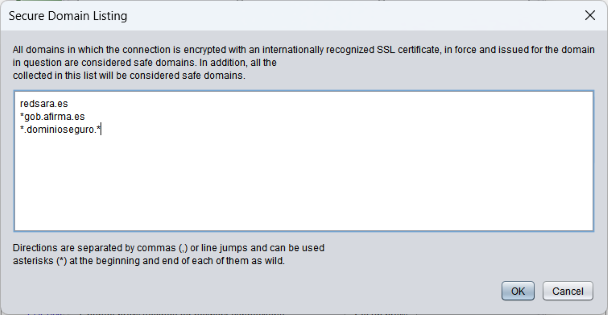

Sometimes, Java does not recognize some domains as safe when connecting with Autofirma to an external service via an SSL channel. This feature allows you to set up a list of domains that will be recognized as safe and avoid this problem.
These domains may be added to the text box shown in the image below, commas separator or line jumps. It is also permitted to be marked with an asterisk as a wildcard at the beginning or end of the domain indicated.

The set settings will apply when you press the OK button. If the Cancel button is pressed, the window will be closed without applying the settings.